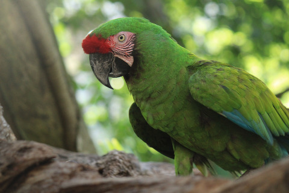
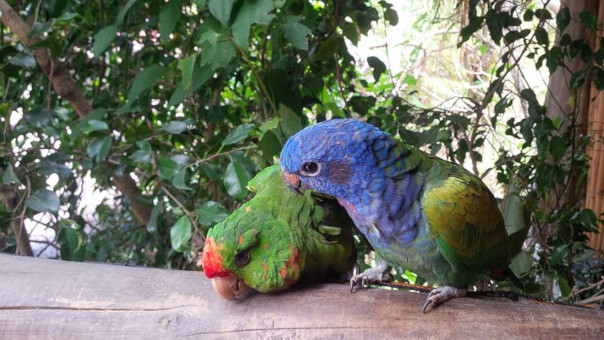
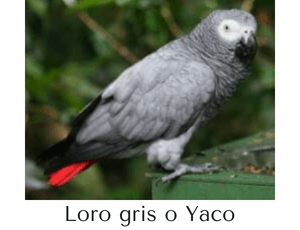
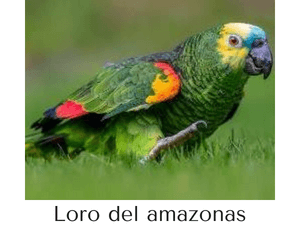
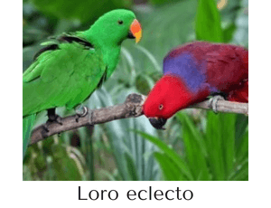
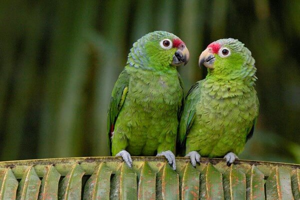

Psittacoidea es una de las tres superfamilias del orden Psittaciformes. Contiene 369 especies de psitacoideos o loros típicos1 Los loros típicos son más numerosos y están más extendidos que las otras superfamilias de psitaciformes, las cacatúas y los escasos y confinados loros de Nueva Zelanda, ya que tienen representantes en América, África, Asia y Oceania (desde Australia hasta la Polinesia).

Hace años, todos los tipos de loros formaban parte de una sola familia, denominada Psittacidae, pero con el paso de los años han ido apareciendo numerosas variantes y subfamilias. Con el paso del tiempo, acabó llamándose psittacoidea al loro común.
Podemos hallar estos loros en hábitats de distintos continentes, y cada uno de ellos tiene una característica que hace que sean únicos en su especie. Veamos ahora cómo es el loro:
Sus plumas son de intensos colores, esta es otra característica de los loros. Habitualmente, el verde es el color que predomina, pero hay ejemplares que poseen otros colores, como puede ser el amarillo, el rojo o el azul.
En referencia a cuánto miden los loros, la medida oscila entre 30 y 45 centímetros. Y respecto a cuánto pesa un loro, en función de la especie, puede pesar desde los 150 g hasta más de 400 gramos.
| Imagen | Datos |
|---|---|
|
 |
Loro gris o yaco. |
|
 |
Loro del Amazonas. |
|
 |
Loro Eclecto. |
Estas aves habitan habitualmente en regiones con clima cálido, lo que significa que podemos hallar loros en cualquier lugar del mundo en que haya un clima tropical.
Por este motivo, donde hallamos la mayoría de estas aves es en lugares como Asia, Centroamérica, Australia y Sudamérica.
Hay un lugar donde podemos encontrar la mayor cantidad de estas aves en nuestro planeta, y este lugar es el hemisferio sur. La cotorra austral es un ejemplar de cotorras que habita en la parte sur de América, entre las Islas Malvinas, Argentina y Chile.

1. Frank Gill y David Donsker: New Zealand parrots, cockatoos & parrots. IOC World Bird List versión 5.2 Volver